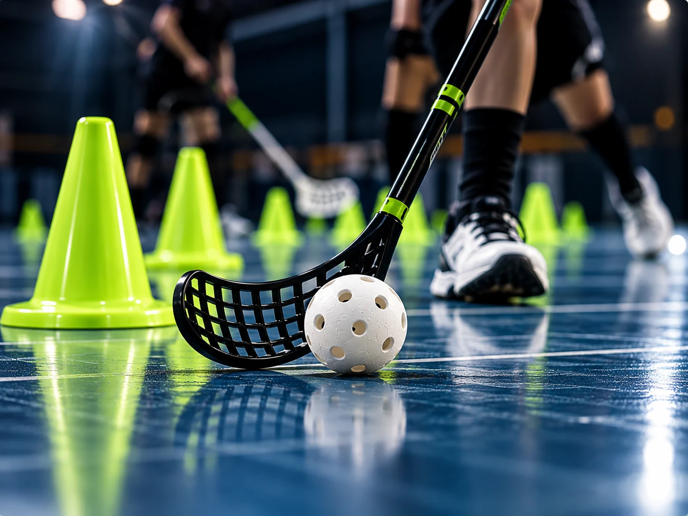
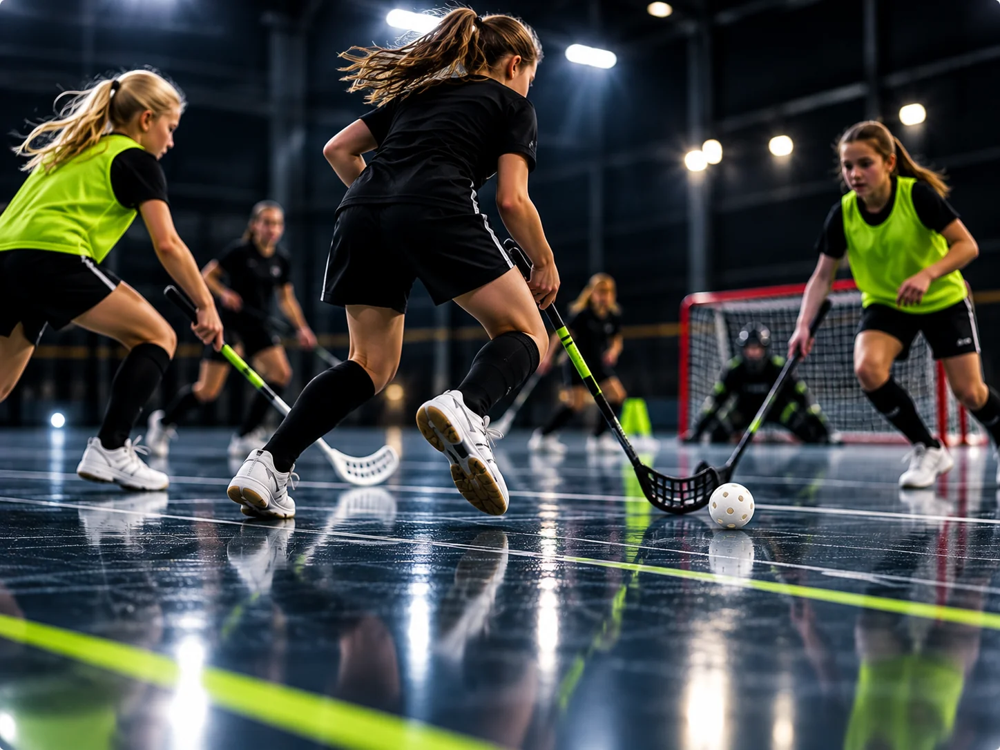

Erfarenhet
I ledarstaben finns erfarenhet från innebandyn som spelare på högre nivå. Kunskap och erfarenheter kan bli värdefulla delar i spelarnas utveckling.

VÅR HISTORIA · VÅR IDÉ
Tre ledare, olika erfarenheter och en gemensam vilja att skapa bra förutsättningar för våra spelares utveckling.
ALLT BÖRJADE MED ETT BEHOV
Ibland börjar en idé med något ganska enkelt. I mitt fall handlade det om att hitta ett bättre sätt att samla träningsmaterial.
Jag ville ha en plats där det var enkelt att hitta anteckningar, förstå övningar och se hur de var tänkta att genomföras – med hjälp av både bilder och text.
Vi sparade material på olika sätt, och det var inte alltid enkelt att samordna våra idéer, dela bilder och beskrivningar eller lämna över material till varandra. Jag saknade en enkel lösning som passade just oss.
Eftersom jag nyligen hade gått en kurs i HTML och CSS växte idén fram att skapa en egen, enklare webbplats. En plats byggd utifrån våra behov, där vårt material kan samlas och vara lätt att hitta tillbaka till.

TRE LEDARE
Vi är en nykomponerad ledarstab kring ett flicklag födda 2016/2017 i nordvästra Skåne. Vi har olika bakgrunder och bidrar på olika sätt i laget.
I ledarstaben finns erfarenhet från innebandyn som spelare på högre nivå. Kunskap och erfarenheter kan bli värdefulla delar i spelarnas utveckling.
En av oss har följt laget som ledare sedan tidigare år och bidrar med erfarenhet av gruppen och dess resa.
Vi bidrar med olika roller och förutsättningar. Tillsammans hjälps vi åt att få träningar och verksamheten att fungera.

SPELARNAS UTVECKLING
Vi vill ge tjejerna kunskap och rätt verktyg för att fortsätta utvecklas och ta nästa steg i sin innebandyresa.
Glädje och gemenskap är en viktig del av innebandyn. Samtidigt tror vi på att spelarna behöver få utmanas, prova nytt och upptäcka vad de själva klarar av.
Vi vill skapa förutsättningar för att varje spelare ska kunna utvecklas i sin egen takt – både som innebandyspelare och som individ.
Vår uppgift är att stötta, inspirera och ge dem möjligheter att växa. Resan och utvecklingen gör de sedan själva, steg för steg.
VARFÖR BAKOM SARGEN?
Namnet Bakom sargen beskriver hur vi ser på våra roller. Vi är tre ledare som står bakom sargen och planerar, förbereder, stöttar och försöker skapa bra förutsättningar.
Men det är spelarna som kliver in på planen. Vi kan dela med oss av kunskap, visa vägar och ge dem verktyg att bygga vidare på. Vi kan uppmuntra dem när det går bra och stötta dem när något känns svårt.
Men vi kan inte göra utvecklingsresan åt dem. Det är tjejerna själva som, med tiden och genom sina egna erfarenheter, formar sina framtida jag – både på och utanför planen.
BAKOM SARGEN · VÅR TANKE
EN IDÉ SOM FÅR VÄXA
Bakom sargen är vår plats för träningsmaterial, anteckningar, bilder och idéer. Här ska vi kunna samla sådant vi använder, hitta tillbaka till övningar och göra det enklare att dela material med varandra.
Allt behöver inte vara färdigt från början. Tanken är att sidan ska växa i takt med oss, våra erfarenheter och spelarnas utveckling.
Förhoppningen är att den ska förenkla vår vardag som ledare och hjälpa oss att skapa träningar som både inspirerar och utmanar.
DAGS ATT PLANERA TRÄNINGEN?
Utforska vår övningsbank och hitta inspiration till kommande träningar.
Till övningarna